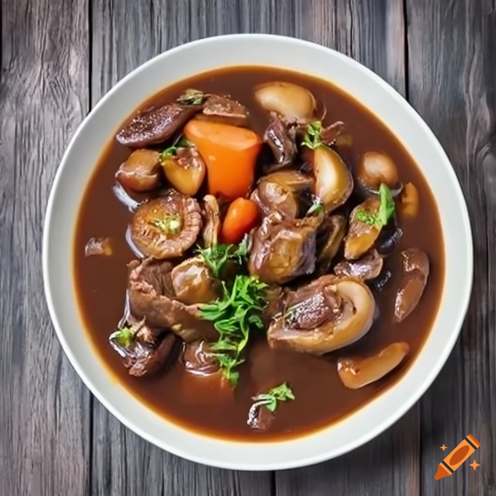

Wołowina po burgundzku
Składniki:
1 kg wołowiny (np. łopatka lub udziec), pokrojonej na kawałki
200 g boczku wędzonego, pokrojonego w kostkę
2 cebule, posiekane
2 marchewki, pokrojone w plastry
2 ząbki czosnku, posiekane
250 g pieczarek, pokrojonych na ćwiartki
750 ml czerwonego wina (najlepiej burgundzkiego lub innej czerwonej odmiany)
500 ml bulionu wołowego
2 łyżki mąki pszennej
2 łyżki masła
2 łyżki oliwy z oliwek
2 gałązki świeżego tymianku
2 liście laurowe
sól i pieprz do smaku
Instrukcje:
W dużej rondli rozgrzej oliwę z oliwek i łyżkę masła na średnim ogniu. Dodaj boczek i podsmaż, aż będzie lekko zrumieniony.
Dodaj kawałki wołowiny i obsmaż z każdej strony, aż będą lekko zbrązowione. Przełóż mięso na talerz.
W tej samej rondli dodaj pozostałe masło i wrzuć cebulę, czosnek, marchewki i pieczarki. Smaż, mieszając, aż warzywa będą miękkie, około 5-7 minut.
Wrzuć mąkę i wymieszaj, smaż przez minutę.
Powoli wlej wino, mieszając, aby połączyć składniki. Dodaj bulion wołowy, tymianek i liście laurowe. Doprowadź do wrzenia.
Wróć wołowinę do rondla, zmniejsz ogień i przykryj. Gotuj na wolnym ogniu przez około 2-3 godziny lub aż mięso będzie miękkie i soczyste.
Gdy mięso jest gotowe, dopraw solą i pieprzem według własnego gustu.
Wołowinę po burgundzku najlepiej podawać gorącą, najlepiej z puree ziemniaczanym lub kluskami oraz świeżą bagietką do namaczania w pysznym sosie.